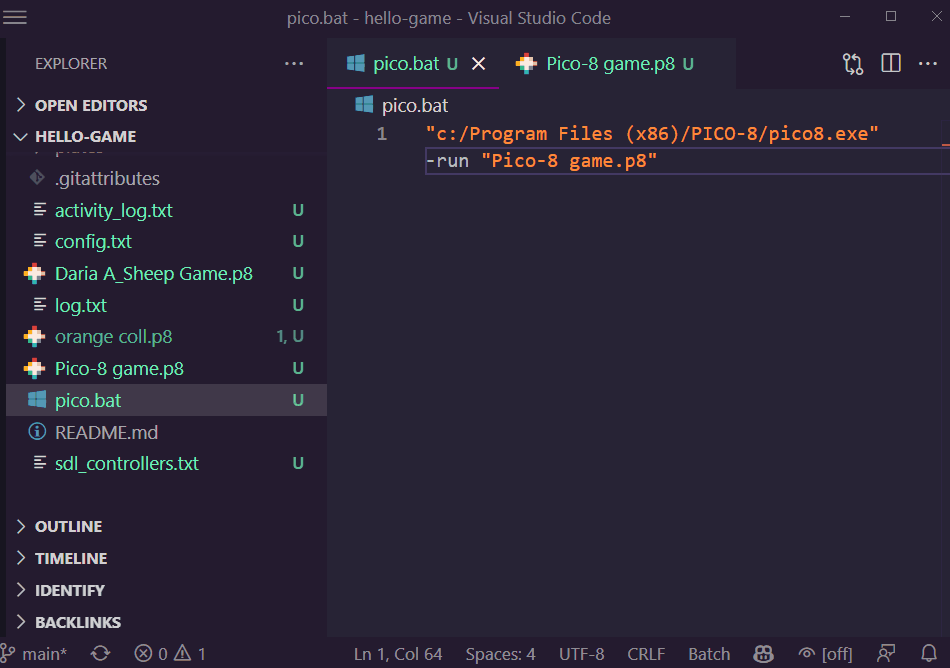

class: center, middle .title[Game Development 2] <br/><br/> .subtitle[Debugging and version control] <br/><br/><br/><br/><br/><br/> .date[Mar 2025] <br/><br/><br/> .note[Created with [Liminal](https://github.com/jonathanlilly/liminal) using [Remark.js](http://remarkjs.com/) + [Markdown](https://github.com/adam-p/markdown-here/wiki/Markdown-Cheatsheet) + [KaTeX](https://katex.org)] ??? Author: Grigore Burloiu, UNATC --- name: toc class: left # ★ Table of Contents ★ <!-- omit in toc --> 1. [The 30 Circle Test](#the-30-circle-test) 2. [Semester overview](#semester-overview) 3. [Debugging](#debugging) 4. [Version control](#version-control) 5. [Assignment](#assignment) <!-- Comment out the next slide if you don't want the Table of Contents link --> --- layout: true .toc[[★](#toc)] --- name: the-30-circle-test class: center # The 30 Circle Test <iframe width="100%" height="500" src="https://www.youtube.com/embed/B6XLbzF6BDU" title="YouTube video player" frameborder="0" allow="accelerometer; autoplay; clipboard-write; encrypted-media; gyroscope; picture-in-picture" allowfullscreen></iframe> --- ## The rules fill each circle with a drawing circles need to be different you have 60 seconds - fill in as many as possible in this time no cheating - no overtime etc --- class: center ## How many circles did you fill in? <br/><br/><br/><br/> -- ## Why not 30? <br/><br/> -- ## Try it again! -- [what happened?](https://www.youtube.com/watch?v=B6XLbzF6BDU&t=858s) -- <iframe width="25%" height="120" src="https://www.youtube.com/embed/B6XLbzF6BDU" title="YouTube video player" frameborder="0" allow="accelerometer; autoplay; clipboard-write; encrypted-media; gyroscope; picture-in-picture" allowfullscreen></iframe> --- name: semester-overview # Semester overview Grig / PICO-8 - weeks 2, 4, 6, 8, 10, 12, 14 - 6 assignments, 10p each, 50p max - building & sharing a PICO-8 game Dragos / Unity - weeks 1, 3, 5, 7, 9, 11, 13 - 40p class activity, 10p exam session presentation - collaborating & developing a game in Unity --- name: debugging # Debugging something's going wrong → we made a mistake - (the computer is always* right) how do we find where our mistake is? where to look? -- <br/><br/> programming = instructions + memory -- debugging = examining the state of the **memory** at a given point -- in practice: 1. looking at our **variables** 2. verifying if they're behaving correctly --- ## In PICO-8 We debug by **logging** variable values to the **terminal**. <iframe width="100%" height="400" src="https://www.youtube.com/embed/FdzmflFF56s" title="pico-8 debugging tutorial: PRINTH" frameborder="0" allow="accelerometer; autoplay; clipboard-write; encrypted-media; gyroscope; picture-in-picture; web-share" allowfullscreen></iframe> - [helper code](https://www.lexaloffle.com/bbs/?tid=42367) - [printh reference](https://www.lexaloffle.com/dl/docs/pico-8_manual.html#PRINTH) --- ## In Unity logging: [`Debug.Log()`](https://docs.unity3d.com/ScriptReference/Debug.Log.html) -- using Visual Studio: - pausing the execution on a *breakpoint* in code - inspecting the memory <iframe width="100%" height="300" src="https://www.youtube.com/embed/rjNDXKgbhgY" title="Visual Studio & Unity: Debugging Your Game" frameborder="0" allow="accelerometer; autoplay; clipboard-write; encrypted-media; gyroscope; picture-in-picture; web-share" allowfullscreen></iframe> --- name: version-control # Version control .left-column[ [GitHub Desktop](https://desktop.github.com/) - [UnityLearn tutorial](https://learn.unity.com/tutorial/set-up-version-control) - [GitHub for Unity](https://unity.github.com/) - [How to Git with Unity](https://thoughtbot.com/blog/how-to-git-with-unity) THE BIG FIVE - clone, pull, add, commit, push more git / GitHub [resources](../resources#git-and-github) ] -- .right-column[<img style="width:100%" src="../attachments/git-in-case-of-fire.png">] --- ## Setting up a PICO-8 proj for version control 1. find your PICO-8 folder - open PICO-8 and run: `folder` 2. create a project repo in that folder (making an empty subdir) - GitHub Desktop - File - New repository... 3. in PICO-8, enter the repo and save an empty .p8 proj there - run: `cd myProject` - run: `save myProject` 4. in the code editor, enter: ```lua #include code.lua ``` 6. open the repo **folder** in VS Code and edit `code.lua`: ```lua left,right,up,down,btn_o,btn_x=0,1,2,3,4,5 black,dark_blue,dark_purple,dark_green,brown,dark_gray,light_gray,white,red,orange,yellow,green,blue,indigo,pink,peach=0,1,2,3,4,5,6,7,8,9,10,11,12,13,14,15 printh('HELLO DEBUG!') ``` --- ## PICO-8 setup cont'd: debugging 1. with VS Code open in your project folder, create a new file `pico.bat` 2. inside `pico.bat`, add the following and save: ``` "c:/your/path/to/pico8.exe" -run "myProject.p8" ``` 3. click `Terminal > New Terminal` (or press `Ctrl+tilde`) .right-column[  ] 4. in the terminal, press `p`, then `TAB`, then `ENTER` 5. in GitHub Desktop, **commit** and **push** your changes --- name: assignment # Assignment Plan a new game to build in PICO-8. - can be a mod of an existing PICO-8 cart - can be a new implementation of an existing design <iframe width="50%" height="230" src="https://www.youtube.com/embed/Hq7IiMPH_DE" title="5 Bad Genres For Your First Game - Game Design Corner" frameborder="0" allow="accelerometer; autoplay; clipboard-write; encrypted-media; gyroscope; picture-in-picture" allowfullscreen></iframe><iframe width="50%" height="230" src="https://www.youtube.com/embed/4TxIS3Zi_RQ" title="5 Overlooked Genres for Your First Game" frameborder="0" allow="accelerometer; autoplay; clipboard-write; encrypted-media; gyroscope; picture-in-picture" allowfullscreen></iframe> --- create a github repo for your new PICO-8 project - edit the `readme.md` with a basic description -- deliverable: github link to - your `.p8` file showing some (any) initial progress - `readme.md` file (optionally) *create a basic Gantt chart / project timeline - at least 6 mini-milestones*